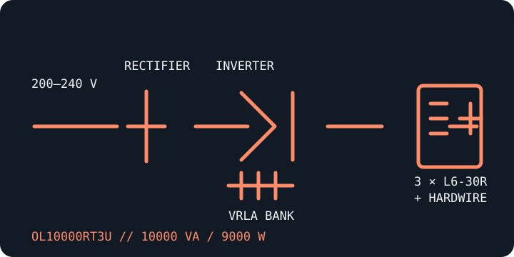

[ ONLINE DOUBLE-CONVERSION UPS // IDENTIFIED MODEL ]
CyberPower OL10000RT3U
A 10 kVA / 9 kW, 3U Smart App Online UPS for configurable 200–240 V installations. This hardwired high-capacity model requires infrastructure and qualified installation appropriate to its rating.

ARCHIVAL IDENTIFICATION: Record the complete model suffix, selected input/output voltage, wiring, battery modules and output receptacle/hardwire connections before service or commissioning.
Exact model specifications
| Catalog category / topology | Online UPS — double-conversion, sine-wave output. |
|---|---|
| Electrical ratings | 10000 VA / 9000 W; user-configurable 200/208/220/230/240 V AC input/output settings. Confirm source compatibility and the chosen setting against the unit's nameplate and manual. |
| Transfer behavior | 0 ms inverter transfer in normal online operation. Bypass and maintenance-bypass transfers are separate operating modes; follow the model guide. |
| Receptacles / connectors | Three NEMA L6-30R output receptacles plus a hardwired output terminal block; hardwired input. Confirm wiring and the applicable load/circuit limits before use. |
| Battery / runtime | Internal sealed lead-acid battery system; compatible external battery modules are available. CyberPower lists approximately 11 minutes at half load (4500 W) in its standard configuration; runtime varies by load and battery condition, and additional battery modules change the result. |
| Communication | LCD control panel, USB, serial, relay and EPO; network/SNMP monitoring depends on the installed compatible card. PowerPanel Business software supports compatible monitoring/shutdown workflows. |
| Compatibility / safety | Only qualified personnel should install or service the 10 kVA hardwired equipment. Verify voltage, phase, conductor and overcurrent protection, grounding, load current and output connector before energizing. Follow battery and bypass safety steps in the exact manual. |
Manufacturer references
- CyberPower — OL10000RT3U product pageManufacturer model page with specification and download links.
- CyberPower — OL10000RT3U datasheetManufacturer datasheet for capacity, connector and configuration details.